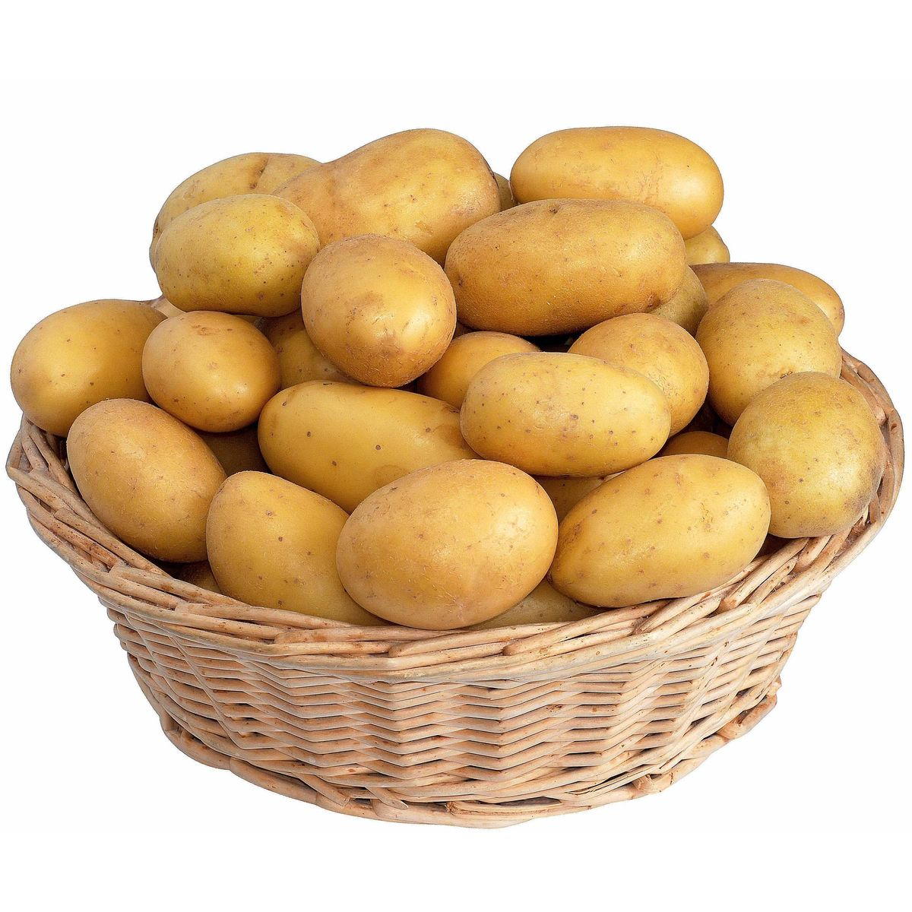

Potatoes are versatile, delicious, and one of the world's favorite root vegetables. Below are examples of how we display images of potatoes using HTML.
This image uses the path Images/potato.jpg.
We have explicitly set the width to 300 pixels and the height to 200 pixels using HTML attributes.

This image uses the path ./potatoes.jpg.
If the image fails to load, the browser will display the alt text instead.

Note: If you only specify the width (like we did here at 400px), the browser will automatically scale the height proportionally so the image doesn't look stretched!